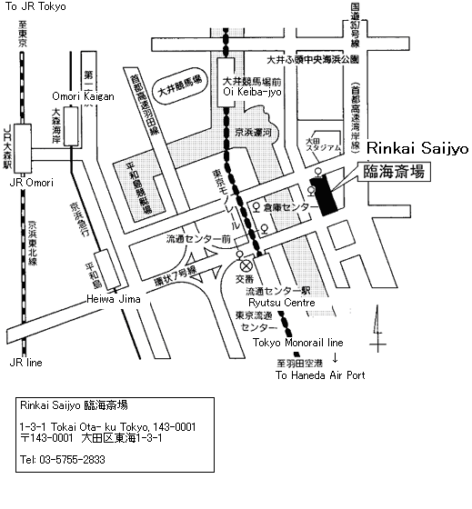

Itojun's Night Ceremony (Tsuya) and Funeral information
Night Ceremony and Funeral
Rest in peace, itojun.
- Night Ceremony:
- Funeral:
- Location:
- Rinkai Saijo (Tokyo, Japan)
- http://www.rinkaisaijo.or.jp/info/index.html (japanese)

Prof. Jun Murai's address
From: Jun Murai
Subject: [wide 41495] Regarding Itojun (English version)
Date: 2007-10-31 18:31:49:JST
Dear WIDE Members,
I am regretful to pass along the sad news that Itojun (Dr. Junichiro
Hagino) passed away on October 29, 2007. He was 37 years old. The WIDE
community would like to send our condolences to his family and friends.
Itojun has been an important member of the WIDE community, making
numerous worldwide contributions in the field of network computing,
especially on KAME/IPv6 and the Internet protocol area. He has had an
important influence on each of our experiences in the WIDE project,
IETF, and on the Internet community. We will miss him terribly.
The family is planning a memorial service at Rinkai Saijo (Tokyo, Japan
http://www.rinkaisaijo.or.jp/info/index.html) on November 6th from
6:00pm, and a funeral service the following day on November 7th from
11:00am. We have received warm requests from many wishing if they can
be of any help. We are presently coordinating efforts with Itojun's
family to see how we may be of assistance during this difficult time. On
behalf of the Internet community we will be arranging for flowers to be
sent, but as many of Itojun's close colleagues may be overseas, we
understand it may be difficult to attend or arrange for flowers from
abroad. As an alternative suggestion we would like to accept warm
messages to the family and/or memorable events with Itojun that you may
want to share. We will deliver these messages to Itojun at the memorial
and funeral service. Please send these messages to
message_for_itojun@wide.ad.jp.
Our deepest sympathies are with Itojun's family for this loss. As a
community, I hope we can come together and support one another in fondly
remembering Itojun.
Jun Murai
On behalf of WIDE Project
WIDE Project announcement
The address from the WIDE Project.